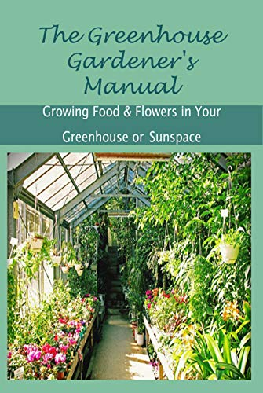

HOME PAGE
Agriculture
Agricultural Drones
Agricultural drones are equipped with sensors and cameras. They are used for imaging, mapping,
and surveying the farms. There are two types of drones: ground-based drones and aerial drones.
Ground drones are bots that survey the fields on wheels.

Greenhouse Automation
Farmers usually use manual intervention to control the greenhouse environment. IoT sensors help
them get accurate real-time information on greenhouse conditions like lighting, temperature, soil
condition, and humidity.
Monitoring climate conditions
Weather stations combined with smart farming sensors collect data from the environment and send
it to the cloud for analysis. It is further used to map the climate conditions, choose the right
crops, and improve their capacity.